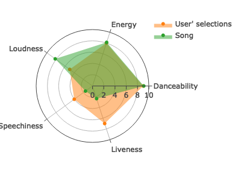

Spotify
The goal of Spotify is to find the user’s favorite music list. It allows you select features they care more about and their corresponding levels. The Spotify would give two recommendation lists which are as match as possible to your selections. One of the lists is obtained by cosine similarity algorithm.
Installation
You can install the development version of Spotify from GitHub with:
# install.packages("devtools")
devtools::install_github("yt0726/ptds_final_project")Usage
Run application
To run the application, you could run this code to start-up the program. You would see the pop-up window of the application, then you could input your preference following the instructions on the first page Introduction. When you only run this application, you do not need to have any data. There is a data set obtained from Spotify that contains 106,943 observation (music).
Spotify::Spotify_gui()Run scoring function
Here is to simulate the output obtained by your selections. If you choose music’s genre is: Funk, and you care about Danceability, Energy, Loudness, Speechiness, Liveness, and you set the corresponding levels are 9,8,5,4,7, you will get the list similar to the table below. Of course, you could use this function individually, and transmit input like the example.
example <- Spotify_scoring(genres="Funk",
features=c("Danceability","Energy","Loudness","Speechiness","Liveness"),
levels = c(9,8,5,4,7))
knitr::kable(example$result)| Artists | Track_name | Track_genre | Danceability | Energy | Loudness | Speechiness | Liveness | score_1 | score_2 | score_3 | score_4 | score_5 | final_score | |
|---|---|---|---|---|---|---|---|---|---|---|---|---|---|---|
| 437 | DJ Ghost Floripa | Mega Funk Reload Vuk Vuk | Funk | 9.106599 | 8.13 | 8.175647 | 1.5440415 | 2.36 | 9.893401 | 9.87 | 6.824353 | 7.544041 | 5.36 | 8.287794 |
| 707 | Wilson Pickett | Let Me Know | Funk | 8.395939 | 7.29 | 7.289089 | 1.3782383 | 6.35 | 9.395939 | 9.29 | 7.710911 | 7.378238 | 9.35 | 8.253889 |
| 269 | James Brown | Get Up Offa That Thing | Funk | 8.395939 | 7.76 | 7.776483 | 3.6787565 | 5.45 | 9.395939 | 9.76 | 7.223517 | 9.678757 | 8.45 | 8.252785 |
| 805 | Snoop Dogg;The Doors | Riders On The Storm - Fredwreck Remix | Funk | 8.913706 | 7.86 | 8.186375 | 1.5751295 | 1.22 | 9.913706 | 9.86 | 6.813625 | 7.575130 | 4.22 | 8.237648 |
| 265 | George Benson | Give Me the Night (Single Version) | Funk | 8.548223 | 8.01 | 7.976250 | 0.6331606 | 3.87 | 9.548223 | 9.99 | 7.023750 | 6.633161 | 6.87 | 8.235506 |
| 464 | Snoop Dogg;Surjeet Singh;Akshay Kumar;Kuldeep Ral;Manjeet Ral;RDB | Singh Is Kinng - Title Song | Funk | 9.035533 | 8.13 | 8.337125 | 0.7761658 | 1.24 | 9.964467 | 9.87 | 6.662875 | 6.776166 | 4.24 | 8.235426 |
| 294 | Kyan | Mandrake | Funk | 8.974619 | 7.70 | 8.328617 | 2.3937824 | 1.07 | 9.974619 | 9.70 | 6.671383 | 8.393782 | 4.07 | 8.215455 |
| 103 | 2Pac;Big Syke | All Eyez On Me (ft. Big Syke) | Funk | 8.852792 | 7.23 | 8.057821 | 2.5595855 | 3.27 | 9.852792 | 9.23 | 6.942179 | 8.559586 | 6.27 | 8.212819 |
| 688 | MC Marks;Mc Davi;Mc Don Juan | Ela Tá Tá Tá | Funk | 8.903553 | 7.21 | 7.970886 | 0.4818653 | 2.85 | 9.903553 | 9.21 | 7.029114 | 6.481865 | 5.85 | 8.205462 |
| 625 | MC Teteu;JC NO BEAT;DJ F7 | Ta Com Saudade de Mim | Funk | 8.883249 | 7.75 | 8.106653 | 0.5709845 | 1.07 | 9.883249 | 9.75 | 6.893347 | 6.570984 | 4.07 | 8.194836 |
Run radar plot function
Besides running the application, if you have similar data set which includes a data frame like the above table, and five fixed features and their levels, you could run the radar plot individually.
Yet, you need input the rank variable which indicates the range of songs you want to plot. For example, if you want to plot the first sons, you would input rank=1, and the values of their features’ levels would be averaged. The example below only plots one songs and compared with the selections. Check example as following:

Meantime, similar to radar plot, you could also run similarity function separately. Check example as following:
Run similarity function
example_2 <- Spotify_similarity(genres = "Funk",
features=c("Danceability","Energy","Loudness","Speechiness","Liveness"),
levels = c(9,8,5,4,7))
knitr::kable(example_2$result)| Artists | Track_name | Track_genre | Danceability | Energy | Loudness | Speechiness | Liveness | |
|---|---|---|---|---|---|---|---|---|
| 4 | Anitta | Envolver | Funk | 8.253807 | 7.33 | 8.159740 | 0.8777202 | 0.909 |
| 1 | Coolio;L.V. | Gangsta’s Paradise | Funk | 6.568528 | 5.14 | 7.302776 | 0.6145078 | 3.980 |
| 9 | Anitta;Chencho Corleone | Gata | Funk | 5.258883 | 7.99 | 8.363391 | 1.2746114 | 7.870 |
| 5 | Anitta;Missy Elliott | Lobby | Funk | 7.705584 | 7.11 | 8.200063 | 0.3979275 | 1.430 |
| 7 | Anitta;Missy Elliott | Lobby | Funk | 7.705584 | 7.11 | 8.200063 | 0.3979275 | 1.430 |
| 3 | Anitta;Missy Elliott | Lobby | Funk | 7.705584 | 7.11 | 8.200063 | 0.3979275 | 1.430 |
| 2 | Clean Bandit;Sean Paul;Anne-Marie | Rockabye (feat. Sean Paul & Anne-Marie) | Funk | 7.309645 | 7.63 | 8.409263 | 0.5419689 | 1.800 |
| 8 | Anitta;Swae Lee | Poquito | Funk | 7.116751 | 8.51 | 8.416292 | 1.2953368 | 3.090 |
| 6 | Anitta | Boys Don’t Cry | Funk | 6.030457 | 8.74 | 8.496199 | 0.4010363 | 1.480 |
| 10 | Anitta;Swae Lee | Poquito | Funk | 7.116751 | 8.51 | 8.416292 | 1.2953368 | 3.090 |